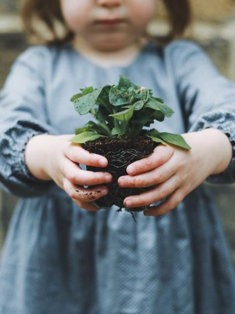

O Dia Mundial do Meio Ambiente é celebrado no dia 5 de junho, foi criado pela Assembleia Geral das Nações Unidas na resolução (XXVII) de 15 de dezembro de 1972 com a qual foi aberta a Conferência de Estocolmo, na Suécia, cujo tema central foi o Ambiente Humano. Todos os anos, nesse dia, diversas organizações da sociedade civil lançam manifestos e tomam medidas para relembrar o público geral da necessidade de preservação do meio ambiente. Em 2019, a China sediará a conferência internacional do Dia Mundial do Ambiente com o principal objetivo de combate à poluição, em uma iniciativa promovida pela Organização das Nações Unidas no quadro da Convenção-Quadro das Nações Unidas sobre a Mudança do Clima.

- Não corte, nem pode árvores sem autorização. Poda drástica é PROIBIDA!!
- Preserve a vegetação nativa. Não desmate! Não coloque fogo!
- Não altere cursos d’água ou banhados, eles são protegidos por lei. Poços artesianos somente com autorização.
- Não crie peixes sem licença. Nunca solte peixes nos rios, mesmo quando estiver bem intencionado.
- Respeite os períodos de proibição da pesca.
- Não compre, nem tenha animais silvestre em casa.
- Não maltrate animais silvestres ou domésticos.
- Separe o lixo em casa e no trabalho, e coloque na rua no dia da coleta seletiva em seu bairro.
- Não jogue lixo no chão. Carregue-o até a lixeira mais próxima. Ensine às crianças dando exemplo.
- Recicle ou reaprove tudo o que puder.
- Reduza o consumo, especialmente do que não puder ser reaproveitando ou reciclado.
- Mantenha seu veículo regulado e ande mais a pé.
- Não contribua com a poluição sonora e/ou visual.
- Use menos veneno em sua lavoura ou horta.
- Não jogue óleos lubrificantes na sua rede de esgoto.
- Não desperdice água. esse é um dos recusros mais importantes e frágeis do planeta: feche torneiras, conserte vazamentos, não use mangueiras para para lavar calçadas, aproveite água de chuva.
- Não desperdice energia elétrica: desligue aparelhos, verifique sobrecargas, apague as luzes.
- Ensine às crianças amor e respeito pela natureza.
- Cuide da higiene e da sua saúde!
- Evite jogar materiais não degradáveis (plásticos ou outros) no ambiente.
